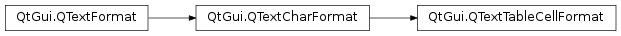

QTextTableCellFormat¶
Synopsis¶
Functions¶
- def
bottomPadding() - def
leftPadding() - def
rightPadding() - def
setBottomPadding(padding) - def
setLeftPadding(padding) - def
setPadding(padding) - def
setRightPadding(padding) - def
setTopPadding(padding) - def
topPadding()
Detailed Description¶
The
PySide2.QtGui.QTextTableCellFormatclass provides formatting information for table cells in aPySide2.QtGui.QTextDocument.The table cell format of a table cell in a document specifies the visual properties of the table cell.
The padding properties of a table cell are controlled by
PySide2.QtGui.QTextTableCellFormat.setLeftPadding(),PySide2.QtGui.QTextTableCellFormat.setRightPadding(),PySide2.QtGui.QTextTableCellFormat.setTopPadding(), andPySide2.QtGui.QTextTableCellFormat.setBottomPadding(). All the paddings can be set at once usingPySide2.QtGui.QTextTableCellFormat.setPadding().
-
class
PySide2.QtGui.QTextTableCellFormat¶ -
class
PySide2.QtGui.QTextTableCellFormat(fmt) -
class
PySide2.QtGui.QTextTableCellFormat(QTextTableCellFormat) Parameters: - QTextTableCellFormat –
PySide2.QtGui.QTextTableCellFormat - fmt –
PySide2.QtGui.QTextFormat
Constructs a new table cell format object.
Creates a new table cell format with the same attributes as the
giventext format.- QTextTableCellFormat –
-
PySide2.QtGui.QTextTableCellFormat.bottomPadding()¶ Return type: PySide2.QtCore.qrealGets the bottom padding of the table cell.
-
PySide2.QtGui.QTextTableCellFormat.leftPadding()¶ Return type: PySide2.QtCore.qrealGets the left padding of the table cell.
-
PySide2.QtGui.QTextTableCellFormat.rightPadding()¶ Return type: PySide2.QtCore.qrealGets the right padding of the table cell.
-
PySide2.QtGui.QTextTableCellFormat.setBottomPadding(padding)¶ Parameters: padding – PySide2.QtCore.qrealSets the bottom
paddingof the table cell.
-
PySide2.QtGui.QTextTableCellFormat.setLeftPadding(padding)¶ Parameters: padding – PySide2.QtCore.qrealSets the left
paddingof the table cell.
-
PySide2.QtGui.QTextTableCellFormat.setPadding(padding)¶ Parameters: padding – PySide2.QtCore.qrealSets the left, right, top, and bottom
paddingof the table cell.
-
PySide2.QtGui.QTextTableCellFormat.setRightPadding(padding)¶ Parameters: padding – PySide2.QtCore.qrealSets the right
paddingof the table cell.
-
PySide2.QtGui.QTextTableCellFormat.setTopPadding(padding)¶ Parameters: padding – PySide2.QtCore.qrealSets the top
paddingof the table cell.
-
PySide2.QtGui.QTextTableCellFormat.topPadding()¶ Return type: PySide2.QtCore.qrealGets the top padding of the table cell.
© 2018 The Qt Company Ltd. Documentation contributions included herein are the copyrights of their respective owners. The documentation provided herein is licensed under the terms of the GNU Free Documentation License version 1.3 as published by the Free Software Foundation. Qt and respective logos are trademarks of The Qt Company Ltd. in Finland and/or other countries worldwide. All other trademarks are property of their respective owners.